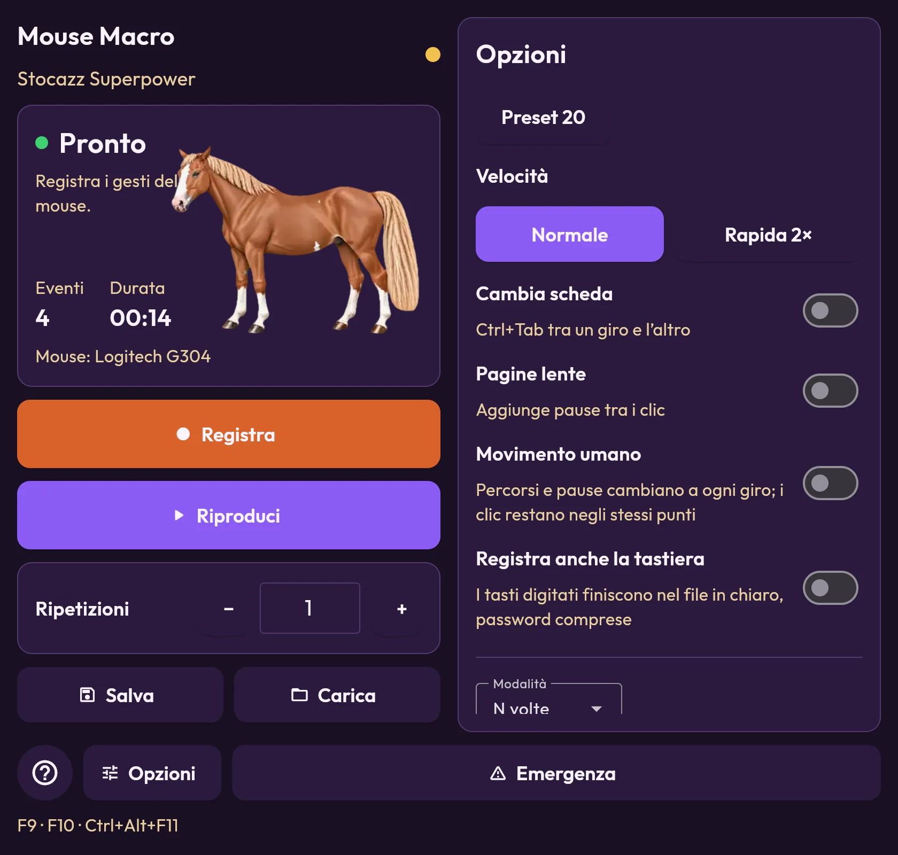
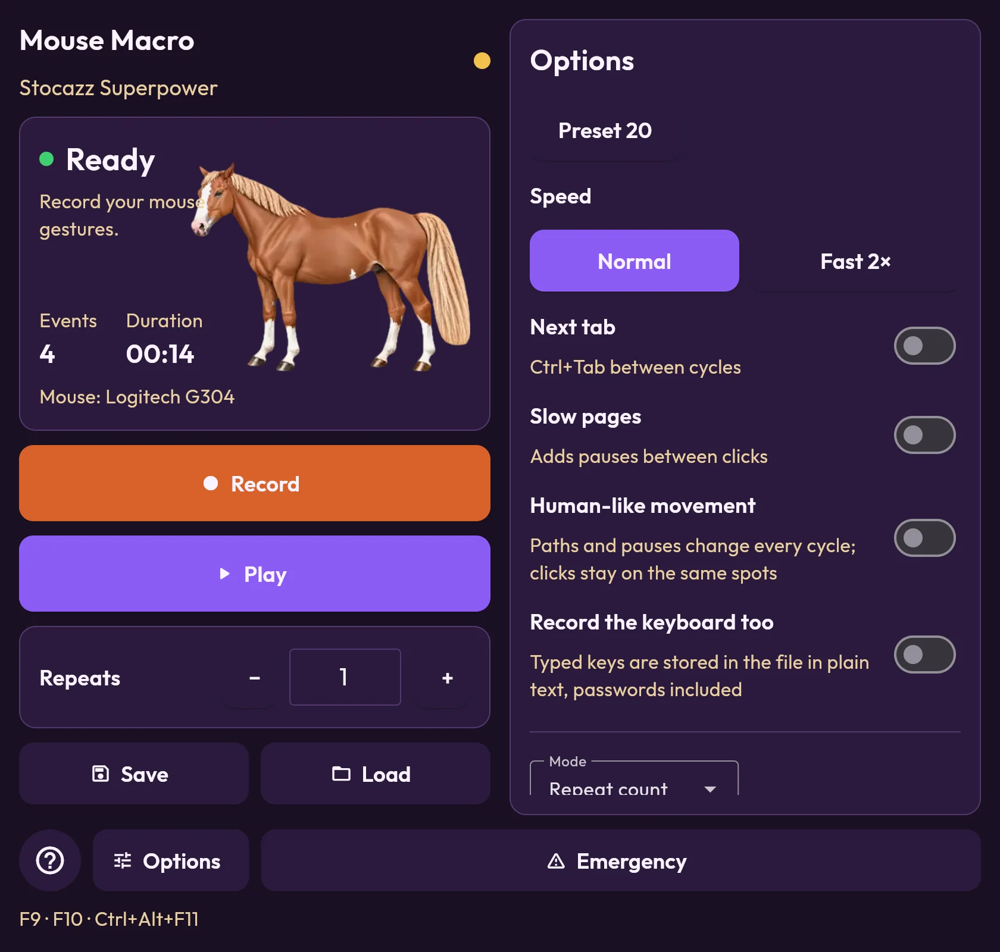
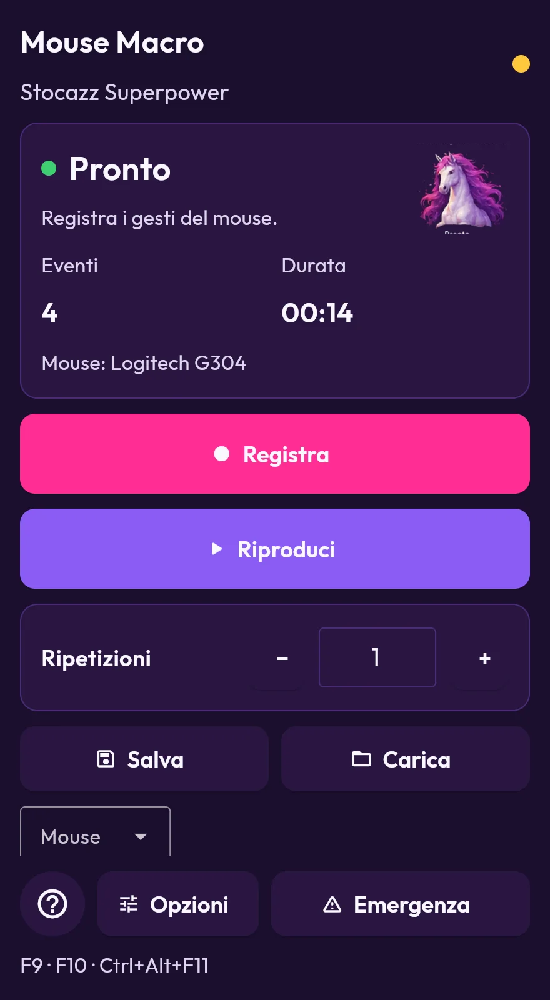
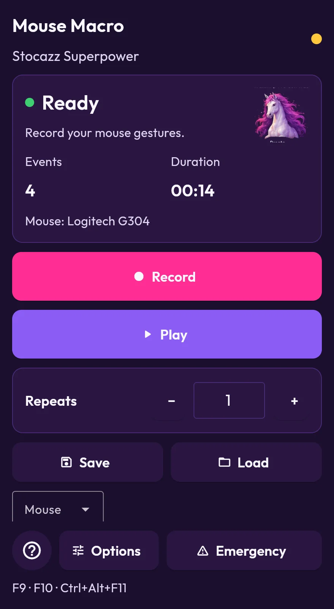
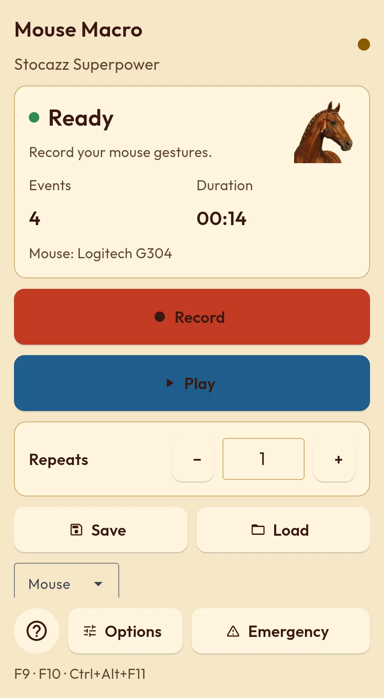

Registra tutto il mouseCaptures the whole mouse
Movimenti, clic, doppi clic, trascinamenti e rotella: sul desktop, nei programmi e sulle barre del browser.
Moves, clicks, double clicks, drags and wheel: on the desktop, in apps and on browser bars.
Un piccolo pannello sempre in primo piano: premi F9, fai i tuoi clic, premi di nuovo F9, poi F10 per ripeterli da 1 a 999 volte, o all'infinito. Python è incluso, niente da configurare.
A small always-on-top panel: press F9, do your clicks, press F9 again, then F10 to replay them 1 to 999 times, or forever. Python is bundled, nothing to configure.
Sistema le finestre, premi F9 ed esegui la sequenza: movimenti, clic, doppi clic, trascinamenti e rotella, in qualsiasi programma.
Arrange your windows, press F9 and do the sequence: moves, clicks, double clicks, drags and wheel, in any app.
Da 1 a 999 ripetizioni o infinito, a velocità Normale o Rapida 2×. Opzioni per pagine lente, Ctrl+Tab tra i giri e movimento umano.
1 to 999 repeats or infinite, at Normal or Fast 2× speed. Options for slow pages, Ctrl+Tab between loops and human-like movement.
F10 parte e ferma. Il pannello si riduce a una barra semitrasparente con contatori e Stop. Ctrl+Alt+F11 è l'arresto d'emergenza.
F10 starts and stops. The panel shrinks to a translucent bar with counters and Stop. Ctrl+Alt+F11 is the emergency stop.
Movimenti, clic, doppi clic, trascinamenti e rotella: sul desktop, nei programmi e sulle barre del browser.
Moves, clicks, double clicks, drags and wheel: on the desktop, in apps and on browser bars.
Velocità Normale o Rapida 2×, con pressioni e doppi clic sempre protetti. Si ferma con F10 o Ctrl+Alt+F11.
Normal or Fast 2×, with presses and double clicks always protected. Stop with F10 or Ctrl+Alt+F11.
Facoltativo: a ogni giro il cursore segue una curva un po' diversa e le pause variano, ma i clic cadono sempre negli stessi punti.
Optional: each loop follows a slightly different curve with varied pauses, while clicks always land on the same spots.
Ripeti la stessa cosa su decine di schede del browser: passa alla successiva tra un giro e l'altro, mai dopo l'ultimo.
Repeat the same thing across dozens of browser tabs: it moves to the next one between loops, never after the last.
Salva in .mmr oppure come .cmd (Windows) o .sh (Linux) da aprire con un doppio clic.
Save as .mmr, or as a .cmd (Windows) or .sh (Linux) you open with a double click.
Un pallino verde o giallo dice se c'è una versione nuova. Scarica e installa solo se lo chiedi tu, controllando lo SHA-256.
A green or yellow dot tells you when a new version is out. It downloads and installs only when you ask, checking the SHA-256.
Pulsanti grandi, ripetizioni sempre visibili, opzioni a scomparsa. Durante registrazione e replay resta solo una barra con contatori e Stop.
Big buttons, repeats always in view, options that fold away. While recording or replaying, only a bar with counters and Stop remains.


Immagini reali del pannello Linux con la skin Bambola.
Real pictures of the Linux panel with the Bambola skin.
Il cavallo del pannello cambia con lo stato: riposa, ascolta mentre registri, è contento quando riproduce. La skin si sceglie dalle Impostazioni e viene ricordata.
The horse in the panel changes with the state: resting, listening while you record, happy while it replays. Pick a skin in Settings and it is remembered.
Sauro dalla criniera chiara, animato a 24 fotogrammi al secondo e leggero sulla CPU.
Chestnut with a flaxen mane, animated at 24 frames per second and light on the CPU.


Viola scuro, la skin storica del progetto.
Deep violet, the project's original look.

Chiara, con il sauro dai nastri di contrada.
Light, with the chestnut wearing contrada ribbons.
Ogni pacchetto viene scaricato dalle release ufficiali su GitHub e verificato con SHA-256. Nessuna protezione del sistema viene disattivata.
Every package comes from the official GitHub releases and is verified with SHA-256. No system protection is turned off.
irm https://raw.githubusercontent.com/realfulvio/mouse-macro-stocazz-superpower/main/install.ps1 | iexScarica la release, ne verifica lo SHA-256 e avvia il programma con il pythonw.exe ufficiale firmato dalla Python Software Foundation. Niente exe.
Downloads the release, verifies its SHA-256 and starts the app with the official pythonw.exe signed by the Python Software Foundation. No exe.
Mouse Macro %%WIN_TAG%%.exe e rispondi Sì per installarlo con i collegamenti in Start e sul desktop.(senza exe).cmd nello stesso ZIP.Mouse Macro %%WIN_TAG%%.exe and answer Yes to install it with Start menu and desktop shortcuts.(senza exe).cmd file in the same ZIP.curl -fsSL https://raw.githubusercontent.com/realfulvio/mouse-macro-stocazz-superpower/main/install.sh | bashWindows usa coordinate assolute. Tieni uguali posizione delle finestre, risoluzione e scala dello schermo fra registrazione e replay.
Windows uses absolute coordinates. Keep window positions, resolution and display scaling the same between recording and replay.
Linux registra spostamenti relativi (su Wayland nessun programma può leggere il cursore): riporta il mouse al punto di partenza prima di ogni replay.
Linux records relative moves (on Wayland no app can read the cursor position): bring the pointer back to the start before each replay.
Privacy. Niente screenshot. L'unico accesso alla rete è il controllo aggiornamenti, anonimo e disattivabile.
Privacy. No screenshots. The only network access is the update check, anonymous and switchable off.
Tastiera solo se la accendi. È spenta a ogni avvio; se la attivi, i tasti finiscono nel file in chiaro, password comprese.
Keyboard only if you turn it on. It is off at every start; when on, keys are saved in plain text, passwords included.